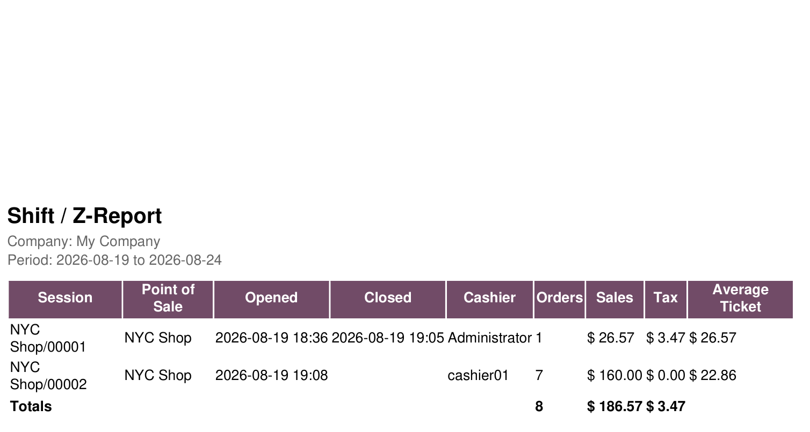
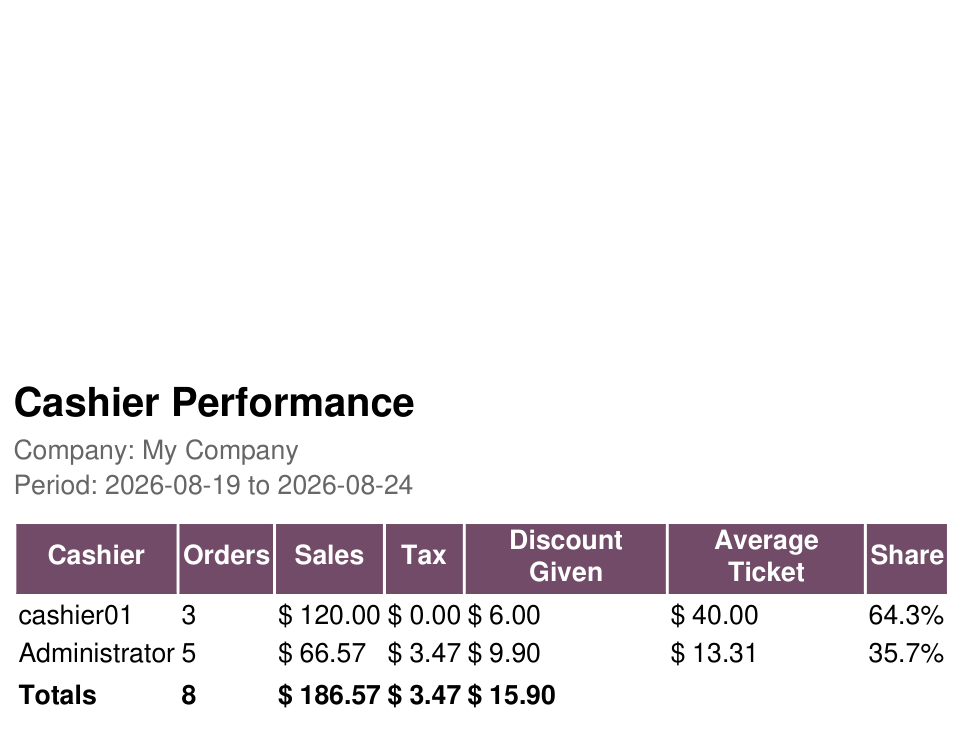
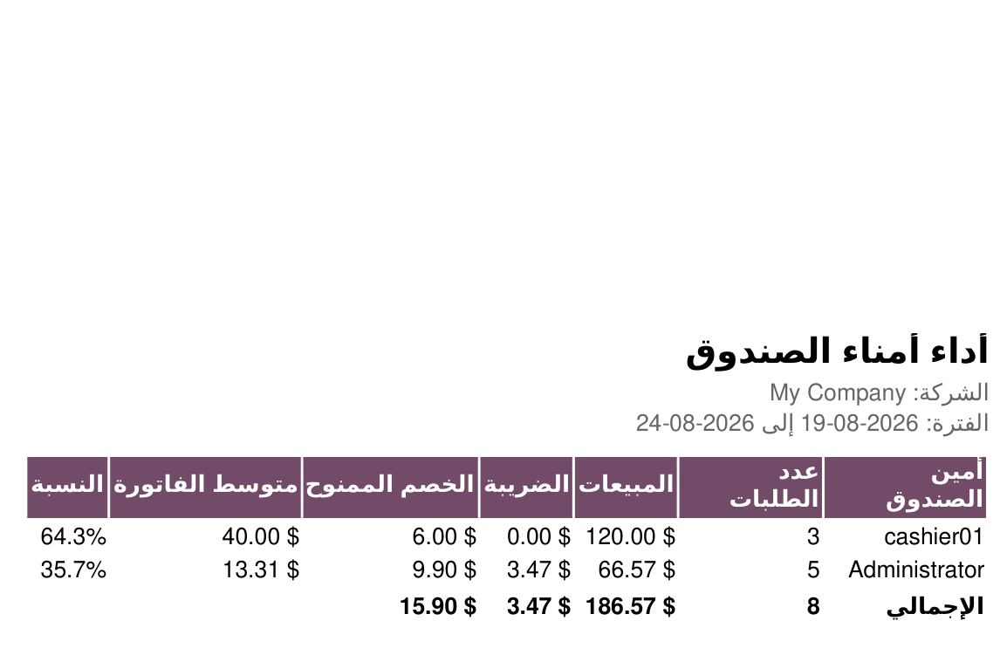
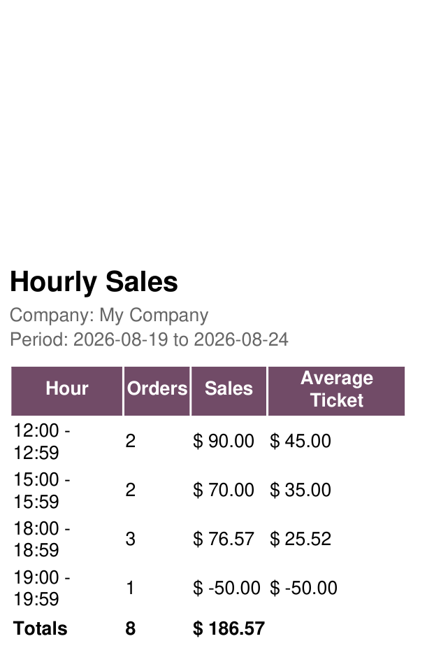
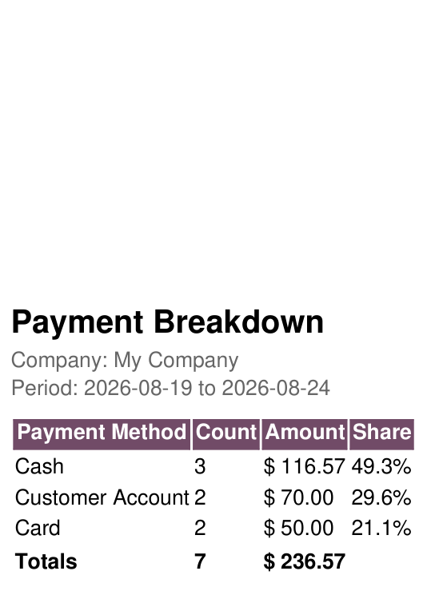
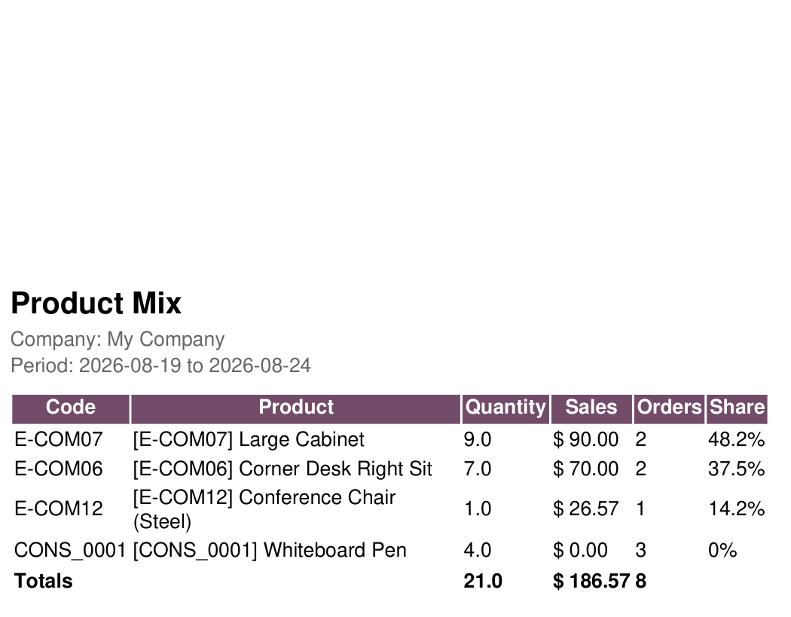

Odoo tells you what a point of sale sold. It is far less forthcoming about which cashier sold it, at what hour, and through which payment method.
Pick a period, pick the tills, pick a report. Every one exports to PDF and to Excel.
Not an English sheet with translated words dropped into it.
The whole page turns aroundHeadings, column labels and alignment all flip for Arabic users. The Excel sheet itself is set right-to-left, with text right-aligned and figures left-aligned - the way an Arabic reader expects to see a column of numbers. |
Cashier Performance, in Arabicأداء أمناء الصندوق أمين الصندوق | عدد الطلبات | المبيعات | الضريبة | الخصم الممنوح | متوسط الفاتورة | النسبة |
What counts as a salePaid and posted orders only. An unfinished ticket is not revenue and a cancelled order never happened, so neither is counted. |
Shares that add upEvery percentage column is computed against the report's own total, so the shares sum to exactly 100% rather than nearly. |
Totals that mean somethingOnly columns worth summing are summed. Averages and percentages are left blank in the totals row instead of adding a meaningless figure. |
Point of Sale → Reporting → POS Reports Pack. Choose a date range, optionally narrow it to particular points of sale, pick a report, then Print PDF or Export Excel. There is nothing to configure first.
Every one of these is a real PDF straight out of the app.

Shift / Z-report. Every session in the period with when it opened, when it closed, who ran it, and what came through it. The one you reconcile the drawer against.

Cashier performance. Note the Discount Given column - what each person handed away in money, not percentages. Shares add to 100%, and the totals row leaves averages blank rather than summing something meaningless.

The same report in Arabic. The whole page turns around - headings, column order and alignment. This is not an English layout with translated words dropped into it.
|
 Hourly sales, in your timezone rather than UTC. |
 Payment breakdown - cash against card against the rest. |

Product mix, ranked by revenue rather than alphabetically, with the number of orders each product turned up in.
Worth knowing before you buy.
The PDFs are figures you can reconcile against, not dashboards. If you want graphs on a screen, Odoo's own POS dashboard already does that.
Figures are assembled in Python rather than by a database query, which keeps the code readable and the numbers auditable. Reporting across a year of a very busy chain will be slower than a single-shop month.
There is no scheduled email delivery yet. You open the wizard and print.
Bugs and configuration problems are fixed promptly, and the report list is still growing. Tell me what you reconcile every morning.
| 💬WhatsApp +20 100 780 2335 | ✉️Email Support |
mohamed.yaseen.dahab@gmail.com · +20 100 780 2335